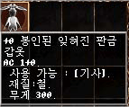
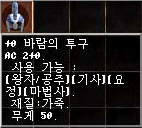

|
2002年8月14日
遺忘之島封印裝備資料
來源：Lineage Playforum
英文翻譯：Lineage Compendium
Lineage Playforum將天堂新聞稿#8掃瞄並發佈在他們的網站上，當中玩家最感與趣的當然是遺忘之島的封印裝備及兩件新道具！
遺忘之島共有七件被封印的裝備，假如要發揮它們的潛在力量，我們必須在遺忘之島上找尋適當的解封道具，並帶到象牙塔的NPC解封裝備。在解封後那些裝備才會回復本來的面貌，及潛在的驚人力量！以下是它們被封印時的資料：
|
|
|
|
攻擊力：3/2，+5攻擊命中
職業：王族、騎士、妖精
必需等級45+ |
攻擊力：2/3，+3攻擊命中
職業：王族、騎士
必需等級45+ |
攻擊力：1/1
職業：妖精
必需等級45+ |
|
|  |
|
|
|
防禦力：1
職業：騎士
必需等級45+ |
防禦力：1
職業：妖精
必需等級45+ |
防禦力：1
職業：妖精
必需等級45+ |
防禦力：1
職業：法師
必需等級45+ |
另外，在新聞稿中亦有提及以下兩個頭盔：
|  |
|
風之頭盔(Wind Helm)
防禦力：2
可使用強力加速術
必需等級45+ |
古老的風之頭盔(Old Wind Helm)
防禦力：2
可用效少的MP使用加速術
必需等級45+ |
遺忘之島裝備解封方法
來源：Lineage Playforum (2)
英文翻譯：Lineage Compendium
Lineage Playforum報告了其中一件封印道具 - 古代的卷軸。即使在韓國測試伺服器上這件道具亦非常珍貴。

封印道具的買價大約為8,000,000，而玩家的賣價約為10,000,000，真的很貴喔！
另外Lineage Playforum亦報導了有關解封了的盔甲，傳言該解封卷軸是來自遺忘之島的飛龍，而盔甲則來自牛人。
結果怎樣？古代金屬盔甲，騎士專用，防禦力：15，另外在解封後重量由300變輕為280呢！這的確是騎士的終極盔甲喔！當想到其他裝備的強度時真的十分興奮！
Lineage II的新動向
來源：Lineage Playforum
英文翻譯：Lineage Compendium
Lineage Playforum公佈了與Lineage II設計者的訪問，重點如下：
1. Lineage II現在大約完成一半。
2. 設計者經常留意討論區，例如Lineage Playforum，希望知道玩家有甚麼意見。
3. Lineage II其中最重要的改變是世界的互動性，當你看見一座山，你應該可以登上該座山。當你看見一個頭盔，你應該可以拾起並戴上，並沒有職業，等級等限制。
4. PK(PvP)系統會如天堂差不多，你殺了人後會有某些不良後果，但他們不會廢除PK系統。
5. 他們非常關注在3D畫面攻城時Lag的情況，他們說已經測試了幾百人同時攻城，並沒有Lag的情況。
6. 非公開測試約在年底開始。
美國正式伺服器8月14日更新內容
來源：美國天堂官方網站公告
1. 修正了部分圖片及素材問題，並加入了遺忘之島的地圖及素材，但並未開放的。
2. 變身等級要求改變了，當玩家等級越高，可以變身的選擇也越多，但並沒有加入新的變身選擇。
3. 替玩家變身NPC有更多變身選擇。
4. 指定傳送卷軸(歌唱之島/隱藏之谷)只會在相應地區的怪物掉下。 |